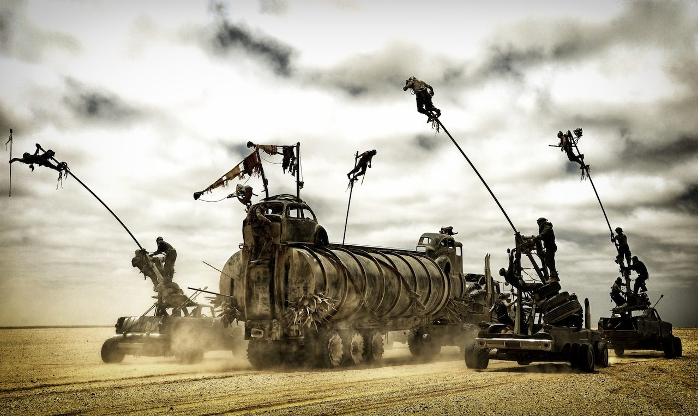
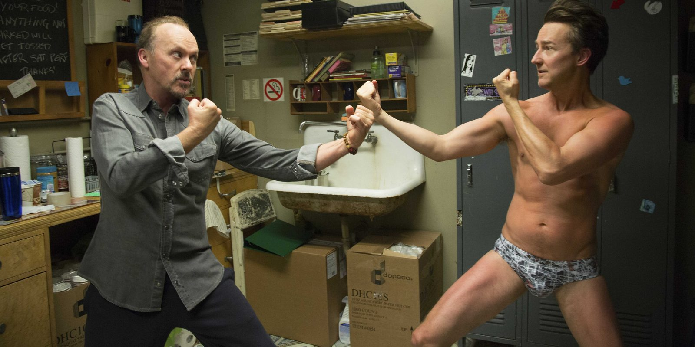
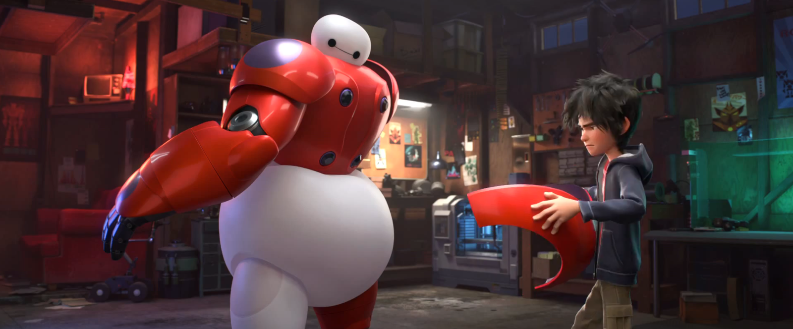
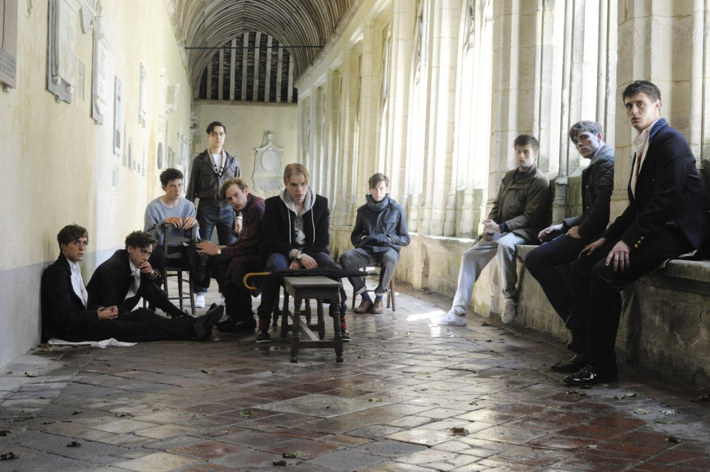
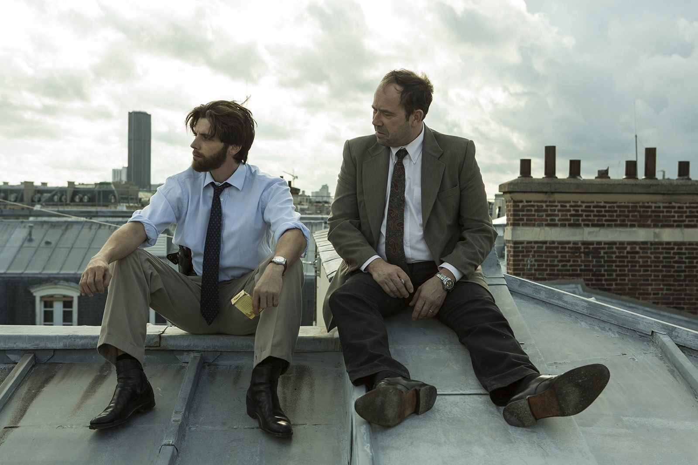

Le top des films 2015 à fin mai
This post was originally written in French.
Les "pas encore vus"
Relatos Salvajes, l'enquête, Shaun the sheep, Avengers: Age of Ultron, Tous les chats sont gris, La loi du marché.
Le top 2015 (à fin mai)
 1/ A Most violent year, bande-annonce, score 8/10, « Première vraie claque de 2015. J.C. Chandor, 3 films, 3 très bons films. Le plus impressionnant, c’est la précision de la mise en scène. Chaque scène est parfaite, réfléchie, maîtrisée. Quand je pense qu’il est déjà occupé sur son prochain film, à propos de Deepwater Horizon … "
1/ A Most violent year, bande-annonce, score 8/10, « Première vraie claque de 2015. J.C. Chandor, 3 films, 3 très bons films. Le plus impressionnant, c’est la précision de la mise en scène. Chaque scène est parfaite, réfléchie, maîtrisée. Quand je pense qu’il est déjà occupé sur son prochain film, à propos de Deepwater Horizon … "

the-theory-of-everything-image-eddie-redmayne

3/ The Theory of Everything, bande-annonce, score 8/10, "Difficile de passer outre la brillante interprétation d'Eddie Redmayne, déjà assez magnétique dans ses autres rôles d'ailleurs."

4/ Birdman, bande-annonce, score 7,5/10, "top acteurs, brillant techniquement mais je dois avouer ne pas être complètement rentré dans tous les éléments de l'histoire" 5/ Whiplash, bande-annonce, score 7,5/10, « Retenez ce nom: Damien Chazelle. Il était déjà auteur du scénario sympa de Grand Piano. Mais là, avec Whiplash, il fait un bond chez les grands. Si ce n’est peut-être pas une chef d’oeuvre, c’est quand même d’un incroyable maîtrise pour une premier film. A la fois le scénario (simple mais efficace), la mise en scène très inspirée, la direction d’acteurs parfaite Un « petit » film, parfaitement maîtrisé. Quel plaisir! »
5/ Whiplash, bande-annonce, score 7,5/10, « Retenez ce nom: Damien Chazelle. Il était déjà auteur du scénario sympa de Grand Piano. Mais là, avec Whiplash, il fait un bond chez les grands. Si ce n’est peut-être pas une chef d’oeuvre, c’est quand même d’un incroyable maîtrise pour une premier film. A la fois le scénario (simple mais efficace), la mise en scène très inspirée, la direction d’acteurs parfaite Un « petit » film, parfaitement maîtrisé. Quel plaisir! »
 6/ Ex Machina, bande-annonce, score 7,5/10
6/ Ex Machina, bande-annonce, score 7,5/10
 7/ Turist, bande-annonce, score 7/10, "La première surprise de 2015. Même si le film avait buzzé au point d'être pressenti pour les Oscars du Meilleur film étranger. C'est un ovni."
7/ Turist, bande-annonce, score 7/10, "La première surprise de 2015. Même si le film avait buzzé au point d'être pressenti pour les Oscars du Meilleur film étranger. C'est un ovni."
 8/ CitizenFour, score 7/10,
8/ CitizenFour, score 7/10,


9/ Big Hero, bande-annonce, score 7/10, « Même si Big Hero n’est pas une chef d’oeuvre, cela reste un super chouette dessin (très bien) animé, plein de punch, fun, avec un Big Hero qu’on voudrait avoir chez soi, mais d’autres personnages un peu moins réussi." 10/ Foxcatcher, bande-annonce, score 7/10, « grandes prestations, étonnante histoire » 11/ Kingsman, bande-annonce, score 7/10



12/ The riot club, bande-annonce, score 7/10, 13/ The Imitation Game, bande-annonce, score 7/10, "L'histoire du gars qui invente l'ordinateur et sauve 14 millions de vie, tout cela avant ses 40 ans ... Ça va quoi :-)"
13/ The Imitation Game, bande-annonce, score 7/10, "L'histoire du gars qui invente l'ordinateur et sauve 14 millions de vie, tout cela avant ses 40 ans ... Ça va quoi :-)"


14/ L'affaire SK1, bande-annonce, score 7/10Mentions honorables
Fast & Furious 7, bande-annonce, score 6,5/10 American Sniper, bande-annonce, score 6,5/10, « il y avait de quoi faire un film stressant ou un film psychologique. Au final ce n’est aucun des deux. Dommage. Aura-t-on encore un jour un Mystic River de la part d’Eastwood? » What we do in shadows,, bande-annonce, score 6,5/10 Big eyes, bande-annonce, score 6,5/10 Tomorrowland, bande-annonce, score 6,5/10, "déçu quand même" Selma, bande-annonce, score 6,5/10 Son of a gun, bande-annonce, score 6/10 Wild, bande-annonce, score 6,5/10 Still Alice, bande-annonce, score 6,5/10